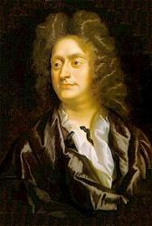

| COLCHESTER (Purcell) |
https://blog.xuite.net/weikuo.mr/tahymns/48469673
你使耕地雨水充足，以水潤澤土地；你降細雨使地鬆軟，叫幼嫩的農作物生長。你賜福使年歲豐收；你足跡所及百物富饒。牧場上牛羊成群；山嶺間歡聲載道。牛羊漫山遍野；榖物滿坑滿谷。萬象歡呼高唱。（詩篇65：9-13）
Composer: Henry Purcell (1685)
Published in 17
hymnals
http://www.sekiong.net/Music/SS/H023.htm
聖詩23首
普賽爾 (Henry Purcell, 1659-1695)是英國有史以來最偉大的作曲家[i]。

今年(1995)是他逝世三百週年，早在80年代末期英國音樂界已經開始籌備他的逝世300週年慶。葛第納（John Eliot
Gardiner)指揮英國巴洛克古樂團(English Baroque Soloists)和蒙台維也弟合唱團(Monteverdi
Choir)演出他的六首「歌劇全集」，分別由三家唱片公司發行已於九三年全部錄製完畢[ii]。羅勃金 (Robert King)
於1988至92年間錄製的普賽爾頌歌和歡迎曲全集」(The complete Odes and Welcome Songs)，全套為 8張CD (英國Hyperian公司限量發行＃44031-44038，散裝編號為
66314，349，412，456，476，494，587，589)。King於91年開始普賽爾讚美詩與禮拜儀式音樂全集。(The Complete
Anthems & Services)的錄音，預計今完成。日前巳全部發行共11集 (Hyperian
#66585，609，623，644，656，663，677，686，693，707，716)。世俗獨唱歌曲全集(The Complete Secular
solo Songs)已經完成三集 Hyperian # 66710，7Z0，730)也將於今年完工。仍由King指揮金氏古樂團（ The King，s
Consort）演出。法國Harmonia Mundi公司把以前該公司出版的六張CD合為一套定名普賽爾指南」(A Purcell Companion，HM#2901528，內容包括：兩首歌劇，室內樂，管風琴，讚美詩等。供有興趣者入門欣貿用。有關專書，今年二月號的
The Music Times (pp. 92-95)，中 Wilfrid Mellers 有一篇「Regarding Henry （有一部Harrison
Ford主演電影名）」介紹兩本有關 Henry Purcell 的新書: 1 Robcrt King, Henry Purcell. London :
Thames and Hudson, 1994．256pp，18.95英磅。2 Peter Holman, Oxford Studies Composer :
Purcell. Oxford: Oxfod University，1994．250pp，平裝本 9.95英磅，有樂譜。元月份的 The Diapason
(p. 6)介紹八種不同 Purcell 的音樂，包括: 選集和宗教音樂。
普賽爾出生於倫敦音樂世家，他的出身和族譜仍是一團迷[iii]。他早年的事蹟不詳，只知1669至1673年之間加入英國皇家教堂聖歌隊員。他曾受教於柯克
(Henry Cooke，1615-1672)，韓福瑞 Pelham Humfrey, 1647-1674) 及布勞 (John Blow,
1649-1708)
門下，之後接布勞在西敏寺擔任風琴調音師。1677年他被任命為皇家教堂的作曲家。1679年，受聘為西敏寺管風琴師至1695年去世為止。1682至1695年他同時兼任皇家教堂管風琴師。1695年11月20日在西敏寺住所去世，葬於西敏寺的音樂角
(Choir Aisle)。他的作品包括 :6首歌劇，42首劇樂 (Incidental Music)，宗教音樂包含: 65首讚美詩，3首禮拜儀式音樂 (Services[iv])，35首宗教歌曲
(Devotional Songs)，5首拉丁教會音樂和24首「頌歌和歡迎曲，．幾百首歌曲，器樂曲和管風琴曲等。他的論文 「最高音部的藝術」(The Art
of Descant)於1683年由普雷福特 (John Playford，1623-1686)出版。
聖詩23首 「主眷顧地，降落雨水」，曲調 (COLCHESTER)出自湯索(William Tansur,
1706-I783)1734年出版的「錫安之歌」（Harmony of Zion 或 A Complete
Melody)中。湯索出生在勞工的家庭，他年輕時當巡迥音樂及聖詩老師．所以足跡遍及Ewell，Barnes, Cambridge, Stamford,
Boston, Leicester 及其他英國城市。他的性情古怪而且很會自我宣傳，自稱「錫安之歌」為有史以來最奇怪的書。湯索於1746年出版一本音樂宇典「A
New Musical Grammar」，共包括1000千個款目。「錫安之歌」中的「傷心思念我主流血」(BANGOR 聖詩
109首)及聖詩第23首為他的作品，似缺乏証據。這首聖詩在「錫安之歌」，中署名 W.T.，所以推測為湯索的作品或他改編的作品。聖詩把這首詩歸於普塞爾的作品，可是此詩並不是選自普賽爾的宗教音樂當中。只有兩本聖詩指南提及此詩可能是普賽爾的作品，但都無註明出處[v]，歌詞為楊士養牧師所為。
--- 台灣教會公報第2234期1994年12月25日 ---
[i] Charles L. Etherington, Protestant Worship Music: Its History and Practice.
N. Y.：Holt，Rinhart & Winston ，1962, p. 126。可見他並不把韓德爾列入英國作曲家。
[ii] 「Dido and Aeneas」，Philip，#432114，「Fairy Queen」， Archiv， #419221，其餘的CD全由Erato公司發行：「Dioclesian」，#45327，
"「Indian Queen」，#45556， "King Arthur」 -#45919 (美國版 )，ECD880562 (台灣版)，The Tempest
(暴風雨)， # 45555 。英國普賽爾學者Sir Jack Allan Westrup 於1973年的「Purcell. London: J M.
Dent一書及1980年他為 「New Grove Dictionary of Music and Musicians, London
:Macmillan」所寫的「Purcell」都把「暴風雨」歸於Purcell的作品。為Purcell編作品索引的 Zimmerrmann把「暴風雨
」編號為361。最近音樂學界對「暴風雨 」的作者來源 (Authorship) 有爭議。1964年出版Proceedings of the Royal
Music Association, v. 90，1963-1964, pp.43-57 刊登Margaret Laurie的文章 「Did Purcell
set the tempest？」 及Stan1ey Sadie主編的The New Grove Dictionary of Opera. London:
Macmillan, 1992, v. 4, p. 684 中 Irena Cholij「暴風雨」款目，都認為它是華登 (John
Weldon，1676-1736)所作 。
[iii] Franklin B. Zimmermann，Henry Purcell, 1629-1605 His Life & Times, 1983，A
Genealogical Puzzle，pp. 339-341，有關普賽爾的父親有兩種不同之說法並列出圖表 : 圖表一顯示普賽爾的父親也叫Henry
Purcell，圖表二顯示普賽爾為Thomas Purcell之子。
[iv]英國聖公會禮拜儀式(Service)有：晨禱 (Morning Prayer)，晚禱(Evening Prayer)。Purcell的聖公會禮拜儀式音樂作品當中：作品
Z231 ，Magnificat and Nunc dimitising為晚禱所作，Te Deum & Jubilate為晨禱曲。Morning &
Evening Service in Bb，Z230。
[v] Robert Guy McCutchaan, Hymn Tune Names : Their Sources and Significance.
N.Y.：Abingdon, 1957, p. 56. James Moffatt, Handbook to the Church Hymnary (rev.
ed. With supplement). Oxford : Oxford University，1935 supplement部份 p. 69f。